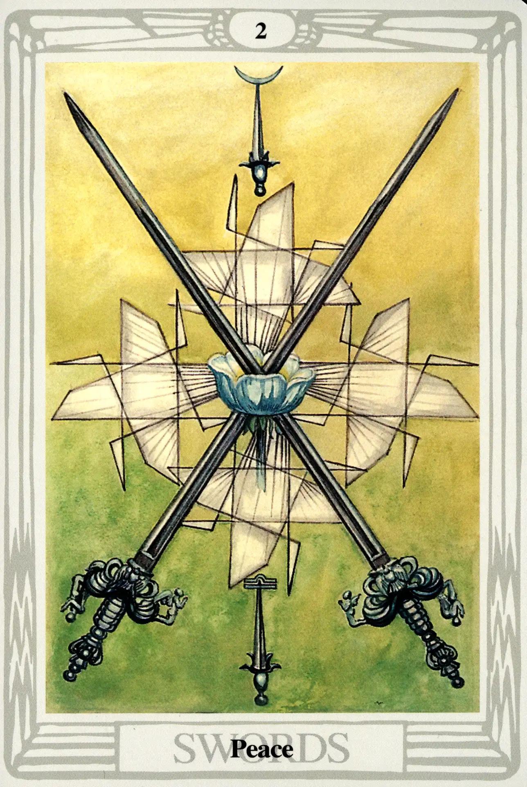

Swords
Two of Swords
Peace

(Moon in Libra)
0° to 10° Libra
September 23 to October 2
Original Title: Lord of Peace Restored.
Golden Dawn Model: Two hands appear from clouds at the right and left side of the card. They hold two swords like the air dagger of a Zelator Adeptus Minor. The swords cross in the center of the card. A red rose with five petals blooms where the swords touch. The rose emits white rays.
Prince Scale for Chokmah: Blue pearl gray, like mother of pearl.
The Four Scales for Moon: Blue; Silver; Cold Pale Blue; Silver, rayed Sky Blue.
The Four Scales for Libra: Emerald Green; Blue; Deep Blue-Green; Pale Green.
Formula: 2 (Chokmah) of Swords (Yetzirah) + Moon in Libra = PEACE
Harris has not strayed very far from the basic Golden Dawn model in this card. She has replaced the red rose with a deep blue-green blossom (Libra), and she forms a stylized Greek cross using the geometrical wings we first encountered on the Princess of Swords. These wings also festoon the backgrounds of the other cards of this suit.
Astrologers tell us that people who were born with Moon in Libra criticize and make judgments from a position of enviable equilibrium. They weigh every problem and proposition with the utmost fairness. This fortunate union of sign and planet finds a predictably dignified home in Chokmah. The result is one of the few cards in the suit of Swords that doesn't evoke groans when it appears in a tarot reading.
That is not to say that it is all goodness and light. We must remember that the natural vocation of a sword is to fight, to cut, to pierce, to kill. It is an instrument of action. Just like the mind, just like the Ruach, the intellectual part of the soul, it is in constant movement.
Eastern mystics tell us that the mind is the great enemy. If we are to achieve profound levels of consciousness, the mind must be overcome. Fearful that its existence and control will end, the mind resists these efforts at all costs. This is why so many cards in the suit of Swords seem so frustrated, anxious, nervous, even tortured.
In the case of the Two of Swords, Peace, it seems we've dodged a bullet. We must always remember, however, that for the sharp and dangerous sword, peace is just an uncharacteristic and temporary interruption from war.